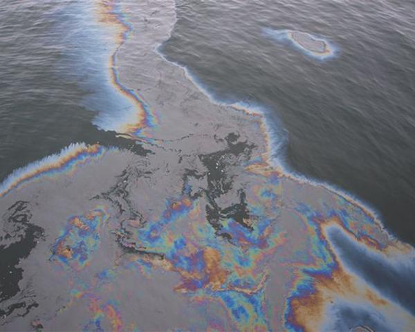

Ekologický stav Černého a Azovského moře
Černé moře čelí vážným environmentálním výzvám. Znečištění ropnými produkty, průmyslové a zemědělské odpadní vody a plastový odpad ohrožují jeho křehké ekosystémy. Významný je také problém eutrofizace — nadměrného množství živin, které vede k nekontrolovanému růstu řas a úbytku kyslíku ve vodě.
Azovské moře, díky své nízké hloubce, reaguje na znečištění rychleji než Černé. Zvýšená teplota vody a znečištění vedou k úbytku některých druhů ryb, což ovlivňuje místní rybářské komunity.

Příklady znečištění a snahy o jeho omezení v oblasti Černého moře.
Ekologické škody způsobené člověkem
Tento přehled znázorňuje hlavní oblasti negativního dopadu lidské činnosti na Černé a Azovské moře.
Znečištění vod
Úbytek rybích populací
Ztráta biodiverzity
Eroze pobřeží
Zasolení sladkovodních oblastí
Tabulka: Dopady lidské činnosti (Černé a Azovské moře)
| Rok | Typ poškození | Popis | Intenzita (1–10) | Vizualizace |
|---|---|---|---|---|
| 2010 | Průmyslové znečištění | Vypouštění odpadních látek z továren | 6 | |
| 2015 | Nadměrný rybolov | Snížení populací ryb o více než 30 % | 7 | |
| 2018 | Zemědělské chemikálie | Hnojiva a pesticidy z polí | 8 | |
| 2022 | Ztráta biodiverzity | Úbytek mořských druhů | 9 |
Zajímavé fakty:
- Plastový odpad tvoří více než 80 % všech odpadů ve světových oceánech, včetně Černého moře.
- Rostoucí hladiny živin v mořích vedou k častým masovým úhynům ryb během léta.
- Mezinárodní projekty, jako je Černomořská komise, pracují na monitoringu a ochraně moří.
- Obnovitelné zdroje energie (větrné a solární farmy) jsou testovány v pobřežních oblastech pro snížení ekologické zátěže.